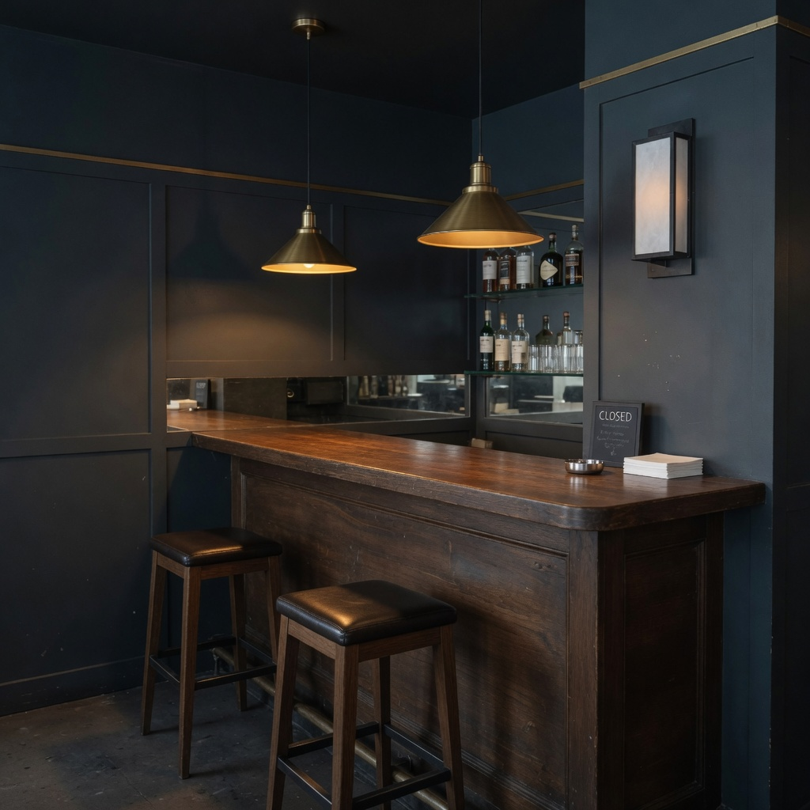
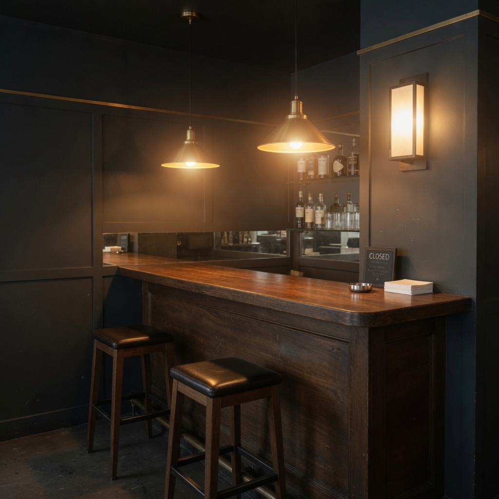
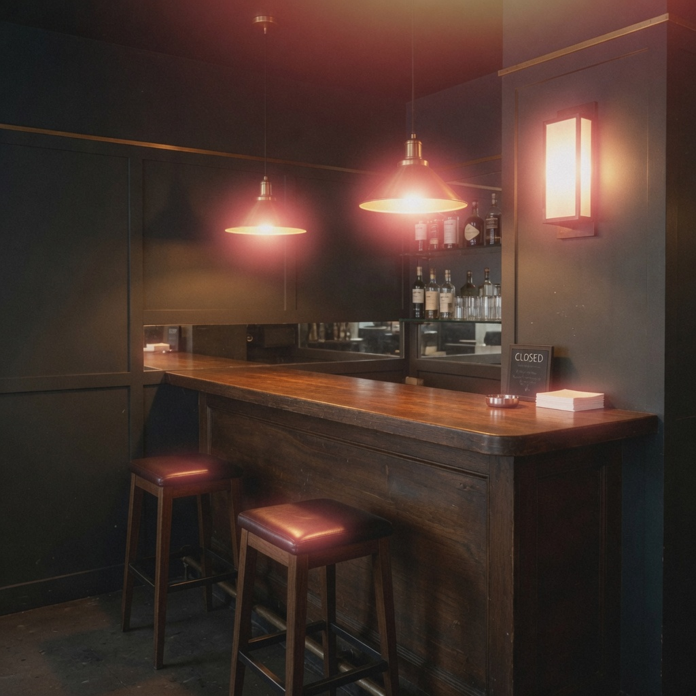

Visual Basis Atlas / Grok Imagine under observation
Hold the room.
Move the light.
Controlled image studies showing how specific visual directions change Grok Imagine outputs—and which other properties move with them.



The scanner changes only where the three registered outputs are revealed. It does not create an intermediate image or change the requested halation level.
- 210
- registry observations
- 100
- complete-score cohort
- 11
- controlled axes
Operational candidate basis · agent-visual scoring · no model-native coefficients
01 / Response field
A direction leaves a wake.
Move one requested property across five locked scenes. Every trace is the mean paired high-minus-low movement that came with it.
- halation+0.720
- highlight bloom+0.176
02 / Discrimination
Similar is not the same.
Two high-intensity requests. The same lamp-present room. One produces a red edge leak; the other spreads pale luminance.
 Highlight bloomobs_0174
Highlight bloomobs_0174
Observed distinction Halation retains a colored leak around existing highlights. Bloom expands brightness without the red edge.
03 / Association geometry
The basis is operational.
Not orthogonal.
Correlation becomes literal angle: θ = arccos(r). Close rays move together; rays beyond 90° move inversely.
- edge softness+0.9092
- microcontrast-0.8824
- highlight bloom+0.5901
- highlight roll-off+0.5412
- halation+0.4102
- diffusion+0.4033
Inspect the complete correlation table
| Dimension | Pearson r | n |
|---|---|---|
| edge softness | +0.9092 | 100 |
| microcontrast | -0.8824 | 100 |
| highlight bloom | +0.5901 | 100 |
| highlight roll-off | +0.5412 | 100 |
| halation | +0.4102 | 100 |
| diffusion | +0.4033 | 100 |
| bokeh softness | +0.2105 | 100 |
| source hardness | -0.0814 | 100 |
| key-to-fill ratio | +0.0227 | 100 |
| black level | -0.0175 | 100 |
| shadow density | -0.0045 | 100 |
04 / Reconstruction
Build the look. Inspect what escaped.
A manual first-order coordinate can organize a visual treatment without pretending to fully explain it.
manually assigned first-order hypothesis · not fitted coefficients


- Mean
- 0.532
- Median
- 0.52
- Range
- 0.48–0.62
- Human ratings
- none
05 / The atlas
Enter through something you can see.
Search the working language, then follow its evidence, status, and unresolved edges.